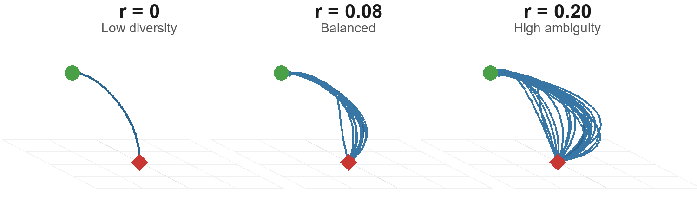
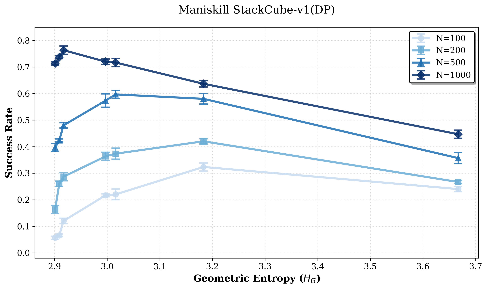
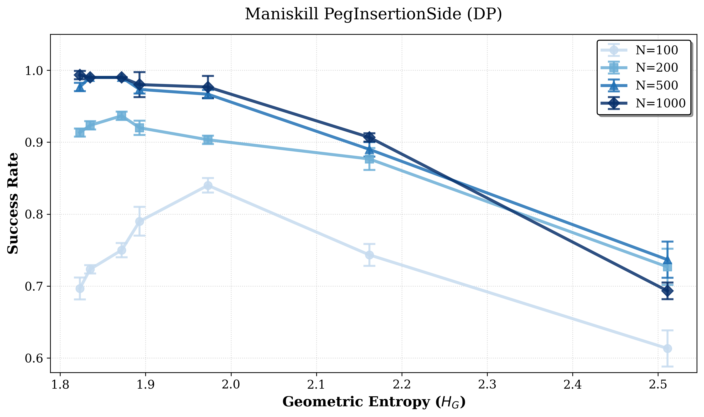
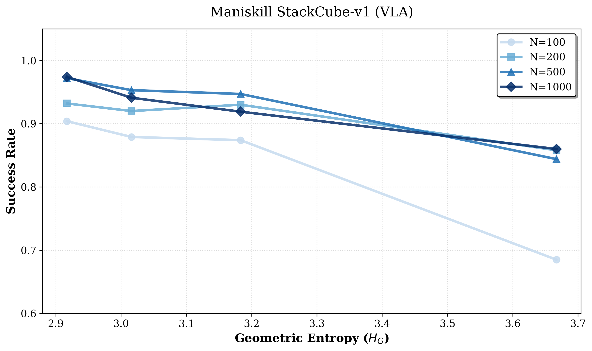
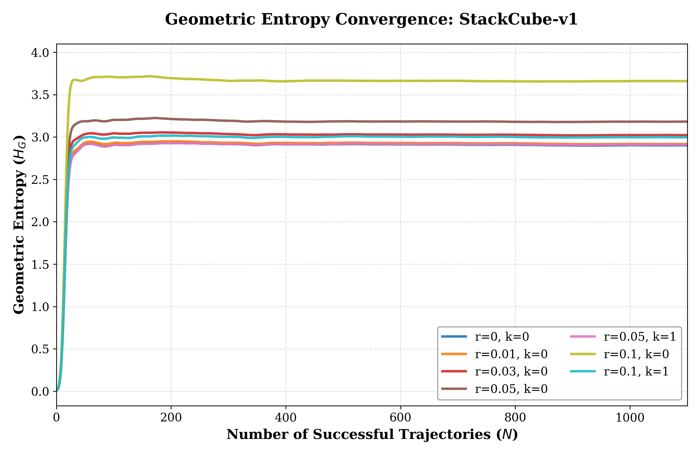
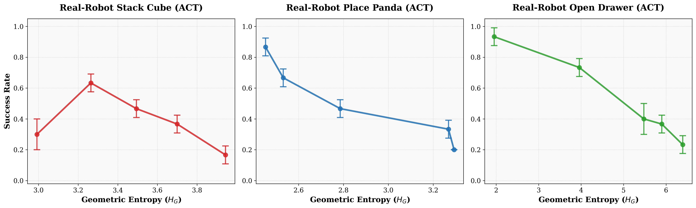
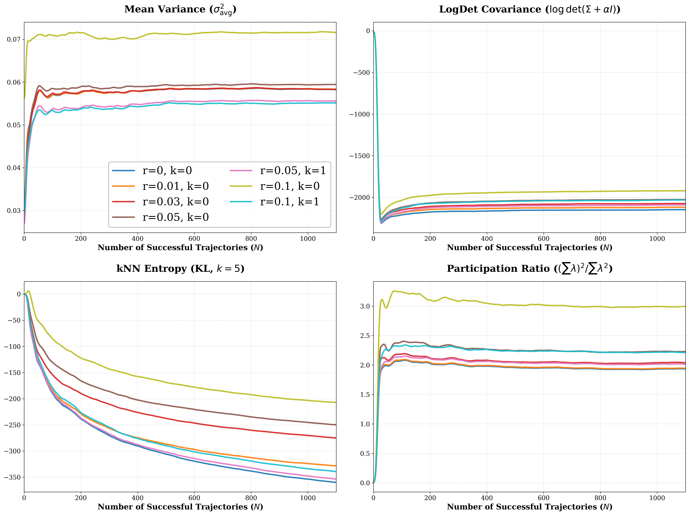

Geometric Entropy
HG measures trajectory-shape diversity after target-frame alignment, focusing on motion geometry rather than extrinsic pose.
IROS 2026
1The University of Hong Kong 2Transcengram

We study how trajectory-shape diversity in demonstrations affects imitation learning performance across models, tasks, and data scales. We introduce HG, a task-agnostic metric that quantifies intrinsic diversity of transit trajectories after normalizing away extrinsic variation such as goal pose and workspace scale. Across multiple IL architectures and both simulated and real-robot contact-rich manipulation tasks, success follows an inverted-U pattern: increasing geometric diversity improves robustness in low-diversity regimes, but degrades performance once diversity induces strategy ambiguity.
The optimal entropy shifts lower as task mastery increases through more data, easier tasks, or stronger model priors. For a pretrained VLA, the trend becomes effectively monotonic decreasing, suggesting that HG can act as a fast pre-training audit for calibrating demonstrations toward the learnable regime.
Core Idea
HG measures trajectory-shape diversity after target-frame alignment, focusing on motion geometry rather than extrinsic pose.
Task mastery is the learner's current proficiency on a task, shaped by model capacity, dataset size, task difficulty, and pretrained priors.
Additional geometric coverage improves recovery when demonstrations are too narrow.
Once the motion corridor is already learnable, extra modes mostly add ambiguity.
Simulation Evidence
StackCube illustrates the inverted-U effect, while PegInsertion reaches a higher-mastery regime where added diversity turns into interference earlier.
Low entropy is brittle, moderate entropy improves robustness, and high entropy mixes incompatible strategies.

Consistent low-entropy demonstrations already cover the narrow insertion corridor, so extra geometric variation primarily adds interference.

Model Priors
We fine-tune the Physical Intelligence π0.5 VLA on StackCube-v1. Its pretrained priors induce a high-mastery regime where added trajectory-shape diversity becomes redundant or conflicting.

Fast Audit
The metric converges quickly enough to audit a pilot collection before training a policy, making it useful for data curation rather than only post-hoc analysis.

Real Robot Validation
ACT policies are evaluated on an ARX arm across StackCube, PlacePanda, and OpenDrawer.

Metric Robustness
Mean variance, covariance volume, effective rank, and local-density entropy can alias distinct strategy organizations or drift with sample size. HG combines shape-mode dimensionality with spread in aligned trajectory space.

Citation
@misc{luo2026geometricentropy,
title = {Geometric Entropy: When Trajectory Diversity Helps and Hurts in Imitation Learning},
author = {Qian Luo and Ruizhe Liu and Pei Zhou and Xunzhe Zhou and Yanchao Yang},
year = {2026},
eprint = {2606.20871},
archivePrefix = {arXiv},
primaryClass = {cs.RO},
url = {https://arxiv.org/abs/2606.20871},
note = {Accepted to IROS 2026}
}